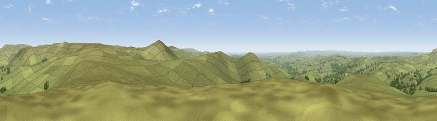

White Tor
#2923 in England · top 3% of its area beats it · near Peter TavyThe view, rendered

A 360° render of this exact spot computed from the terrain model, tree cover and land cover — summer colours, afternoon light, calibrated against photographs of famous viewpoints. Real trees, hedges and buildings will differ in detail.
The panorama
Grey silhouette: terrain skyline in each direction (720 bearings, Earth curvature and refraction included). Dashed green: skyline with trees (+15 m) and buildings (+8 m) as obstacles. Blue strip: how far the ground is visible on each bearing.
Where the view opens
Wedge length = distance to the farthest visible ground on that bearing (vegetation-aware). Rings at 10, 25 and 50 km.
What fills the view
94% grassland · 5% woodland ·
Angular shares of the visible panorama (visual magnitude), not map area. Landscape diversity 0.12 (0–1 Shannon).
Key numbers
More beautiful places nearby
The staircase of upgrades: each row has a higher view potential than everything closer. Driving times are estimates from straight-line distance, calibrated against real road routing — check an actual route before setting out.
| Place | Direction | Drive | Score |
|---|---|---|---|
| Viewpoint near Princetown | SE · 3 km | ~6 min | 77.0 |
| Great Links Tor | N · 8 km | ~16 min | 77.8 |
| Viewpoint near Dousland | S · 9 km | ~18 min | 81.0 |
| Viewpoint near Lee Moor | S · 16 km | ~28 min | 82.7 |
| Viewpoint near Downderry | SW · 32 km | ~50 min | 83.5 |
| Viewpoint near Stokeinteignhead | ESE · 39 km | ~58 min | 84.1 |
| Viewpoint near Hope | SSE · 42 km | ~62 min | 84.4 |
| Viewpoint near Lesnewth | WNW · 44 km | ~64 min | 87.7 |
50.58957, -4.06003 · source: dobih hill · position refined by local search. Computed location — check access rights before visiting.